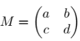

Раскраска вершин графа называется совершенной, если для любых
двух вершин одного цвета цветовые составы их окружения совпадают.
В частности, это означает, что все соцветные вершины имеют одинаковую степень.Матрица параметров совершенной 2-раскраски имеет вид
и означает следующее. Каждая вершина белого цвета соседствует ровно
с a и b вершинами белого и черного цветов соответственно. Аналогичный
смысл имеют параметры c и d для черных вершин.
Матрица M называется допустимой для графа, если существует
совершенная 2-раскраска вершин графа с параметрами a, b, c и d.

Матрицами параметров совершенной 2-раскраски кубического графа G являются только следующие шесть матриц: